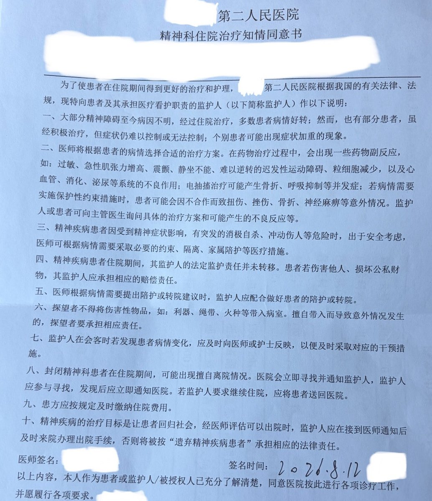

int喵喵喵🍥
@inline_int
@hasaki_sama 精卫真的生不如死🥺

Neko 🐾
@hasaki_sama
呃……开学的事先搁一边喵 现在有个更严重的问题就是咱可能要被关精卫了喵😭💥👊
任生自古谁无死……虽然说已经被医生发通知了但是在正式提交住院手续之前感觉应该还是会有点和父母周旋的余地……
总之 尽量不要把自己真的搞进去吧喵🥺 https://t.co/zqzSWojvNX